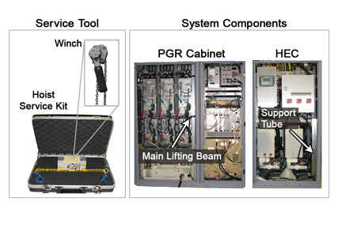
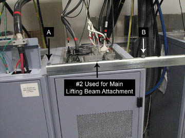
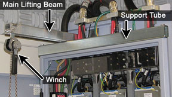

Operating Documentation
Direction 5670006, Rev# 1
Discovery MR750w GEM Service Methods
Module Version 6.0, Version Date 10/21/11
Operating Documentation |
| Required Persons | Preliminary Reqs | Procedure | Finalization |
|---|---|---|---|
| 1 | Not Applicable | Not Applicable | Not Applicable |
The hoist service kit and lifting accessories (see Illustration 1) assist in the removal and replacement of equipment room field replaceable units (FRUs) that may weigh anywhere from 36 lbs. to 345 lbs. The hoist consists of a service tool and system components. The winch with chains and spreader bar for lifting the replacement FRUs are in the hoist service kit. The support tube and main lifting beam are system components. The support tube is located in the Heat Exchange Cabinet (HEC) . The main lifting beam is located in the Power Gradient RF (PGR) cabinet. This document reviews the fundamentals of the hoist discussing how to properly set up the hoist service kit and lifting accessories to use for specific replacement procedures.
Illustration 1: Hoist Kit and Lifting Accessories

| Item | Qty | Effectivity | Part# | Manufacturer | |
|---|---|---|---|---|---|
| Hoist Service Kit (Service Tool) | 1 | - | 5196226 | - | |
| Non-Magnetic Tool Kit (or equivalent) | 1 | - | 5113258 | - | |
| Main Lifting Beam (System Component) | 1 | - | - | - | |
| Support Tube (System Component) | 1 | - | - | - | |
| Service Platform (System Component) | 1 | - | - | - | |
| ||||
| possible personal injury or equipment damage! | ||||
| the module could fall when using the lift tool. | ||||
| before putting weight on the hoist chain, be sure that the links are aligned properly. this will help keep the chain from binding up, or becoming kinked, which is nearly impossible to correct when the chain is under tension. |
| ||||
| Perform the proper Lockout/Tagout procedure for the type of replacement being performed. The cabinet should not have any power as you are assembling and using the hoist kit. | ||||
In the HEC, remove the support tube. The support tube is located on the right hand side of the cabinet and is secured with two mounting bolts.
There are seven openings in the support tube to be used in multiple configurations (see Illustration 2). Place support tube on top of cabinet in which an item is being replaced. To place the support tube correctly onto the cabinet, please follow the proper orientation (see Table 1). Secure the support tube on top of the cabinet using a wrench to tighten the two bolts onto the top.
Illustration 2: Support Tube - Openings Labels

| NOTE: | See Illustration 3 for an example of the support tube in position for RFamp removal. |
Illustration 3: Support Tube in Position for RFamp Removal

Table 1: Support Tube Orientation by Cabinet
| Cabinet | FRU | Left Cabinet Attachment | Main Lifting Beam Attachment | Right Cabinet Attachment |
| HEC | All FRUs (Power Box, Blower, Gradient Coil Pump, Power Electronics Pump) | C | 2 | A |
| PEN (Support Tube Overhang Right) | All FRUs (Driver Module, Scan Room Power Supply (SRPS) ) | A | 2 | B |
| PEN (Support Tube Overhang Left) | All FRUs (Driver Module, Scan Room Power Supply (SRPS) ) | B | 2 | A |
| PGR | XPS-X Axis | A | 1 | C |
| XGA-X Axis | A | 1 | C | |
| XPS-Y Axis | A | 3 | C | |
| XGA-Y Axis | A | 3 | C | |
| XPS-Z Axis | A | 4 | C | |
| XGA-Z Axis | A | 4 | C | |
| XRFD Amp - 3.0T only | B | 2 | A | |
| XRFD PS - 3.0T only | B | 2 | A | |
| Dual Drive RF Amp(8137) - 750w 3.0T only | B | 2 | A | |
| SRFD2 - 1.5T only | B | 2 | A |
Remove the main lifting beam from the PGR Cabinet. The main lifting beam is located on the right side of the PGR cabinet and is secured with Velcro straps.
| NOTE: | The XPS J9 in the Z-axis connector must be unscrewed and pulled out in order to take out the main lifting beam. |
The main lifting beam slides onto the top of the cabinet. You may have to move cables or hoses out of the way, but none of the cables or hoses need to be disconnected, especially for the PEN cabinet. There is a rear bracket for each position. The main lifting beam hook plate slides into the rear bracket (see Illustration 4). (Check to ensure that the rear bracket is tight and secure.)
| NOTE: | The bracket lines up with the support tube's orientation (see Table 1). If the bracket is not aligned properly to receive the main lifting beam, then the support tube orientation setup is incorrect for the cabinet. |
Illustration 4: Cabinet Rear Bracket

| NOTE: | For the PGR Cabinet, remove the gradient cable cover by unscrewing two screws on each side (see Illustration 5). Then remove the needed beam slot cover by unscrewing the one thumbscrew (see Illustration 6). |
Illustration 5: Gradient Cable Cover

Illustration 6: Beam Slot Cover Thumbscrew

Slide the winch into the main lifting beam. Secure the winch in with the pin so it does not slide out. The winch is able to slide within the main lifting beam to allow proper alignment with the removed item or FRU lifting bracket (see Illustration 7).
Illustration 7: Hoist Kit Assembled

Remove the winch by removing the pin from the main lifting beam and sliding out the winch. Place the winch (including hook and chains) into the hoist service kit box.
Remove the main lifting beam. Return the lifting beam to the PGR cabinet. Insert the hook end of the beam into the cabinet edge first, then place the bottom part of the beam in. Secure it into the cabinet with the Velcro straps and pin at the lower end of the beam.
| NOTE: | Plug in the XPS J9 connector on the Z-axis after the main lifting beam has been inserted in the cabinet. |
Unscrew the support tube from the top of the cabinet. Return the support tube to the HEC and secure with the two bolts.